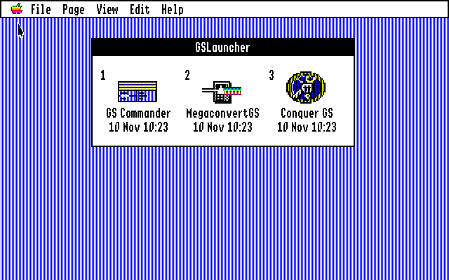
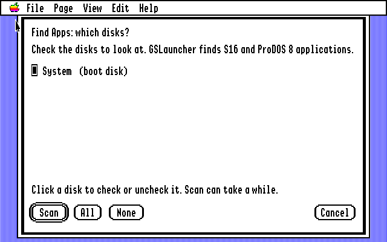
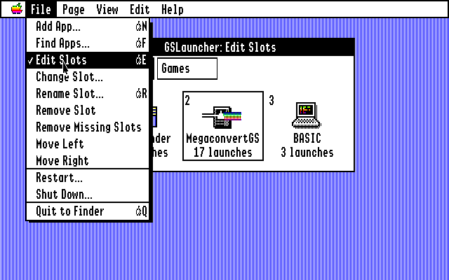
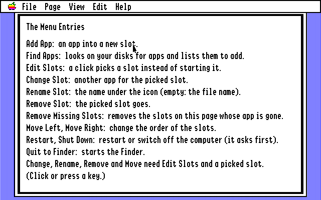

The Sixteen‑Bit Gazette
New products
Utilities · page 14
GSLauncher
Your programs, one click away. One window of icons starts your applications, and when you quit one, you are back where you started.

The Finder is good at finding things, but most days you want the same handful of programs: the file manager, the picture converter, the game you cannot leave alone. To get to them you open a disk, open a folder, open another folder and double-click. GSLauncher puts them in one window instead. Click an icon, and the program starts. Quit the program, and you are back at the launcher, ready for the next one.
It can be the first thing you see when the computer starts. Set it as the startup application and GS/OS opens it in place of the Finder; the Finder is one menu item away. Nothing about your programs has to change, and nothing is copied: a slot only remembers where the program is.
Click, and it starts
Each slot shows the program’s own icon, taken from the Finder’s icon files in the program’s folder or on its disk, so it looks the way it does in the Finder. A program with no icon gets a plain one. Under the icon is its name, and under that a line you can choose: the date of the file, when you last started the program from the launcher, or how many times you have started it.
GS/OS applications and ProDOS 8 programs both work, and both come back to the launcher when they quit. The first nine slots of a page can be started from the keyboard too: press 1 for the first, 2 for the second, and so on. If a program has been moved or deleted, its icon is dimmed and says “not found” instead of failing when you click.
It finds your programs for you
The first time GSLauncher starts there is nothing in it yet, so it offers to look. First you check the disks to scan: the disk you started from is checked already, and All checks every disk in the machine. Then you click Scan. Escape stops it if a disk is large.


It lists every GS/OS application and ProDOS 8 program it finds, with its path. Check the ones you want and click Add Selected. The System folder and ProDOS itself are left out, and a program already in the launcher is not added twice. You can do all this again at any time with Find Apps in the File menu.
Slots, your way
Add App asks for a program in the usual file dialog. To change what you have, choose Edit Slots: a click now picks a slot, with a frame round it, instead of starting it. Then Change Slot gives it another program, Rename Slot changes the name under the icon, Remove Slot takes it out, and Move Left and Move Right change the order. Choose Edit Slots again, or press Escape, to go back to starting programs.


Remove Missing Slots tidies up after you have moved or deleted programs: it removes every slot on the page whose program is gone.
Pages
One window is plenty for ten programs, but not for forty. The Page menu adds pages: up to four, each with its own name and up to eighteen slots. As soon as there is a second page, tabs appear across the top of the window. Click a tab, or press Tab, to change page. Rename Page changes a name, Remove Page removes the page and its slots (never the programs themselves), and Move Slot to Next Page sends the picked slot to the next page.

How often, and when
Every time you start a program from the launcher, GSLauncher counts it and notes the time. The View menu chooses what the line under each name shows: Show File Date, Show Last Used or Show Launch Count. It remembers your choice. The date of the file is handy if you write programs yourself: it shows at a glance that the new build has arrived.
Start it with the computer
Open the Control Panel, choose Set Start, then Select Application, and pick GSLauncher. From then on GS/OS starts GSLauncher when the machine starts. Quit to Finder in the File menu goes to the Finder whenever you want it.
The File menu also has Restart and Shut Down. Both ask first, and both use GS/OS’s own shutdown call, so every disk is closed properly before the machine restarts or tells you it is safe to switch off.


Help at hand
The Help menu explains it all, a page at a time: starting programs, editing the slots, what each menu entry does, the slots file, finding programs, and pages and views.

A list you can read
The slots are kept in one text file, Launcher.Slots, next to the program. You can edit it with any text editor, or copy it to another disk. A star at the start of a path stands for the disk you started from, so the list keeps working if the disk is renamed.
Launcher.Slots
| @view=2 | What the third line shows: 0 file date, 1 last used, 2 launch count |
| [Tools] | A page; the slots below it belong to it |
| Name=*:Folder:Program | A slot: its name, and the path of the program |
| |42|10 Nov 09:56 | After the path: launches, and the last time (written by GSLauncher) |
Yes! I want GSLauncher.
No check, no money order, no stamp. GSLauncher is free. Download the disk image, copy the GSLauncher folder to your System 6 disk, and double-click. The first time, it offers to find your programs.
Index
More for Apple II fans by Walter Tengler. All of it on one page →
Apple IIgs
Apple II tools for the Mac
More retro for the Mac
This page is dressed as 1986, the year of the Apple IIgs and of Norton Commander.